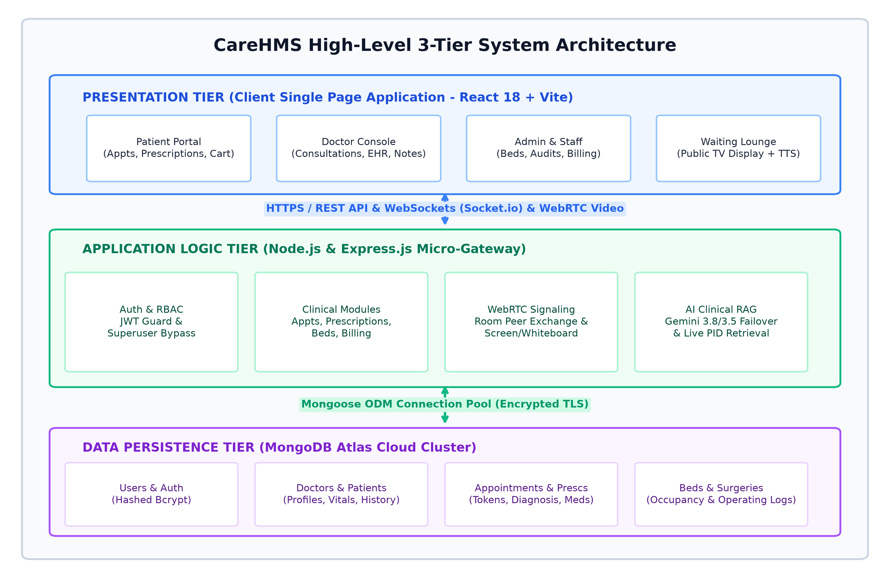
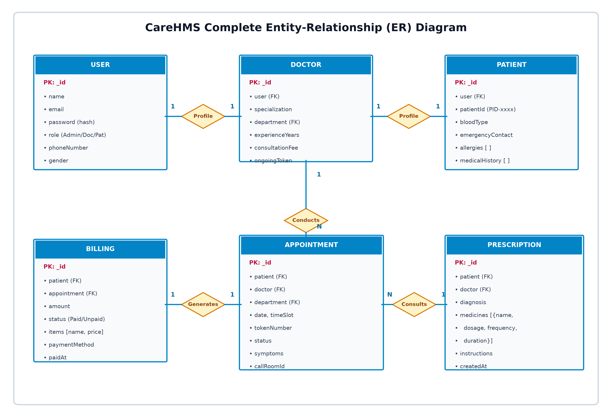
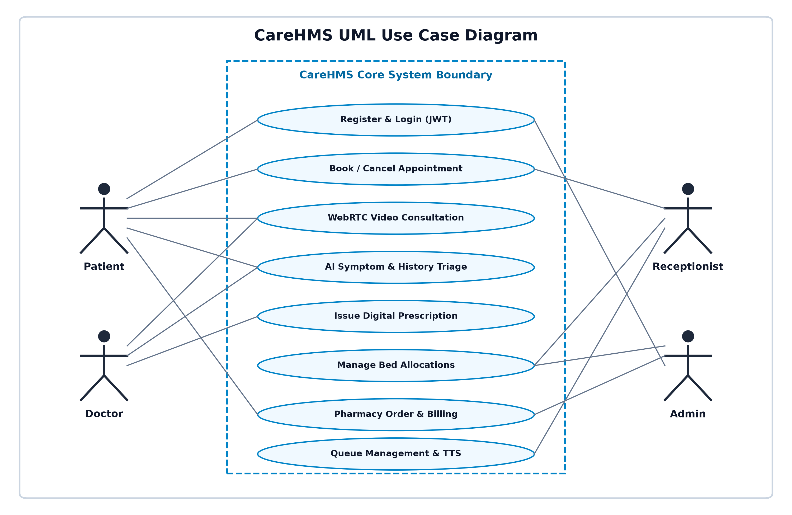
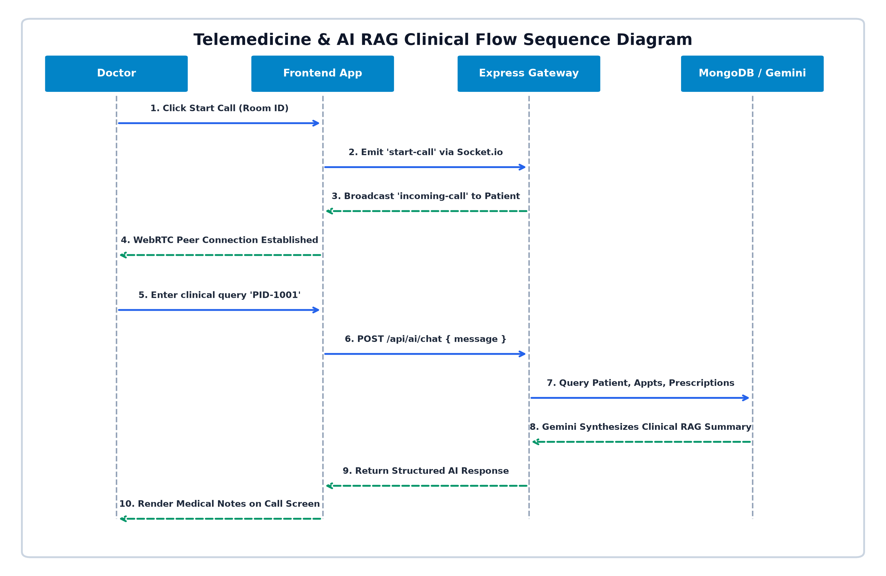

CareHMS: Smart Healthcare ERP & Telemedicine
With Real-Time WebRTC Video Consultations & Database-Backed Clinical AI Assistant
The Healthcare Crisis: Operational Friction in Hospitals
1. OPD Overcrowding
Patients endure 2 to 4 hours in physical waiting queues with manual slips, escalating patient dissatisfaction and cross-infection hazards.
2. Telemedicine Disconnect
Remote doctor calls happen on detached apps like Zoom or WhatsApp that cannot view or write into active Electronic Health Records (EHR).
3. Siloed Hospital Data
Prescriptions, pathology uploads, in-patient bed allocation, and medicine inventory operate in uncoordinated desktop software.
Proposed Solution: CareHMS Integrated Ecosystem
🩺 Native WebRTC Telemedicine
Direct browser-to-browser encrypted audio/video streaming, 3D animated incoming call alerts, and collaborative real-time whiteboards.
🤖 Clinical AI with Database RAG
Google Gemini 3.8/3.5 LLMs automatically retrieve live patient history, past visits, and allergies from MongoDB to assist doctors.
📢 Smart OPD Queue & TTS Audio
Public waiting lounge TV dashboard that automatically speaks announcements (e.g. "Token 104, Dr. Sharma") via Web Speech Synthesis.
💊 E-Pharmacy & In-Patient ERP
Automated dosage prescription generator, bed ward tracking (General, ICU, Emergency), and real-time billing reconciliation.
System Architecture: 3-Tier Distributed MERN Framework

Presentation Tier
React 18 Single Page Application bundled with Vite, GSAP 3D animations, and responsive Tailwind-style design.
Application Logic Tier
Node.js & Express REST Gateway with Socket.io real-time signaling and clinical AI RAG controllers.
Data Persistence Tier
MongoDB Atlas Cloud NoSQL database with optimized indexes for ultra-fast query retrieval.
Clinical AI Assistant: Retrieval-Augmented Generation (RAG)
1. Clinical Intent Detection
Physicians query patient history (e.g. "Summarize PID-1001") or patients describe symptoms in conversational Hinglish/English.
2. Live Database Retrieval (R)
Backend queries MongoDB collections (Patient, Appointment, Prescription) for vitals, allergies, and drug histories.
3. Context Augmentation (A) & Multi-Model Generation (G)
Records are structured into Gemini system prompts with dual-model failover (Gemini 3.8 Flash + Gemini 3.5 Flash) ensuring zero downtime.
Native Telemedicine: WebRTC Protocol & Sockets
P2P Encrypted Audio/Video
RTCPeerConnection negotiates direct media streams without intermediary servers, cutting bandwidth and video latency.
3D Incoming Call Modal
Socket.io triggers real-time alerts. When a doctor starts a call, the patient's screen flashes a pulsing 3D GSAP modal.
Collaborative Whiteboard
HTML5 Canvas drawing allows doctors to sketch anatomical annotations or explain radiological scans during consultations.
Database Architecture: Entity-Relationship (ER) Schema

User & Role Profiles
1:1 relationship binding credentials (User) with specialized Doctor or Patient schemas.
Clinical Lifecycle Mappings
Appointments link Patients and Doctors (1:N) with token numbers and consultation status.
Prescriptions & Invoices
Nested medicine items, dosage frequency, and automated checkout ledger generation.
System Roles & Capabilities: UML Use Case Diagram

Bookings, WebRTC calls, prescription reviews, symptom check, e-pharmacy orders.
Teleconsultations, prescription authoring, OPD queue management, AI medical triage.
OPD token distribution, bed ward admissions, waiting room TV screen control.
Department analytics, doctor credential approval, system audit bypass.
Clinical Workflow: Telemedicine & AI RAG Sequence Flow

1. Room Negotiation
Socket.io exchanges room IDs and SDP offers/answers between doctor and patient.
2. Direct WebRTC Channel
STUN servers negotiate ICE candidates to open direct peer-to-peer video streaming.
3. Simultaneous Clinical AI RAG
Doctor inputs PID in chat — backend extracts history from MongoDB and Gemini provides medical summary.
Smart OPD Queue & Automated Audio Announcer
Live Waiting Lounge Screen
Designed for public TV screens in patient waiting halls, showing active tokens, current doctor room, and wait times.
Web Speech Synthesis (TTS)
Browser speaks natural voice announcements (e.g. "Token 104, Dr. Sharma Room 3") when doctor clicks 'Call Next'.
15-Minute Dynamic Slots
Balancing appointment scheduling to prevent lobby congestion and peak-hour hospital crowding.
Security Framework: Zero-Trust RBAC & Encryption
JWT Authentication
Stateless bearer tokens validated on every protected API call with auto-expiration on session close.
Bcrypt Salt Hashing
Passwords encrypted with cryptographic salt rounds, protecting database credentials from leakages.
Admin Superuser Clearance
Custom middleware bypass allowing hospital auditors complete record visibility without 403 errors.
Secure Environment Isolation
.gitignore and .env templates protect secret MongoDB and Gemini keys from public repository leaks.
Testing & Real-World Performance Metrics
Key Verified Scenarios:
✔ TC-01: Valid authentication issues signed JWT and loads dashboard seamlessly.
✔ TC-02: Unauthorized patient access to surgery schedule blocked with 403 status.
✔ TC-03: Telemedicine trigger delivers 3D video call modal to patient in <150ms.
✔ TC-04: Clinical AI extracts PID history from MongoDB and generates clinical review.
✔ TC-05: Waiting room token advance triggers browser speech synthesis chime.
Future Scope & Technological Roadmap
Vision OCR Scanner
Gemini Vision API integration to photograph handwritten doctor parchas or blood lab reports and auto-populate EHR fields.
Razorpay & UPI Sandbox
Instant digital payment gateway with QR code scan for billing invoices and pharmacy store checkout receipts.
Vector Document RAG
ChromaDB vector database integration to index entire hospital policy manuals and health insurance documents for semantic Q&A.
Thank You!
CareHMS: Next-Gen Smart Healthcare ERP & Telemedicine
Open for Questions, Feedback & Live Demonstration